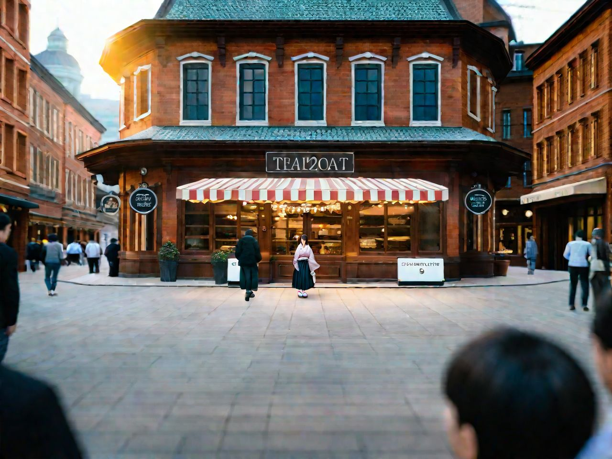
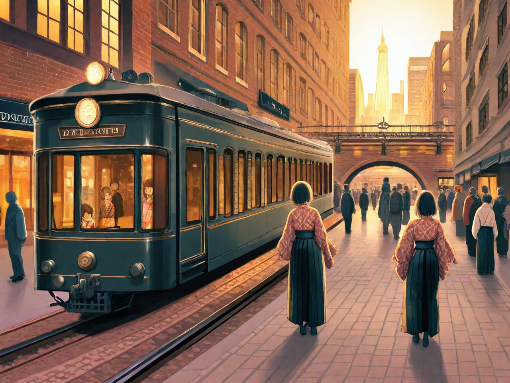
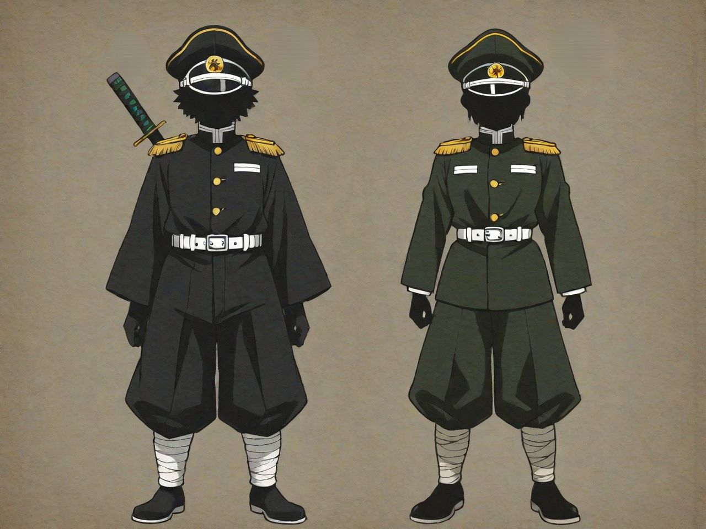
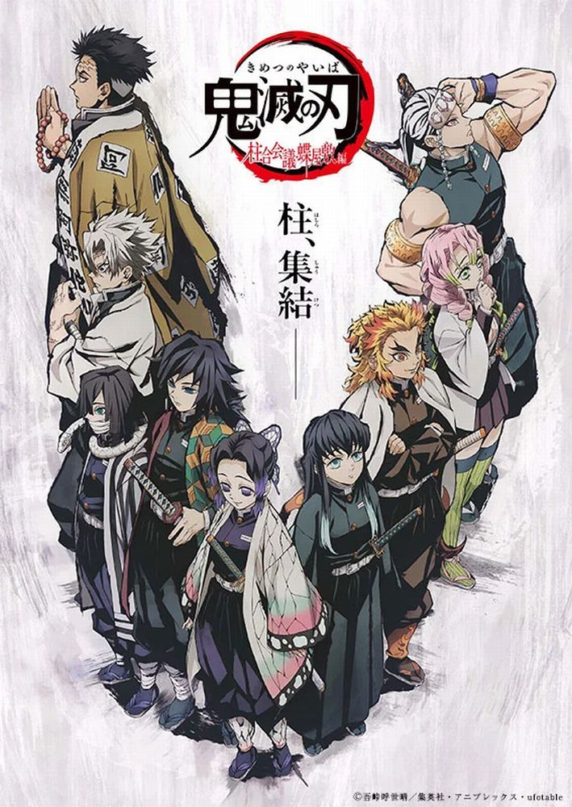
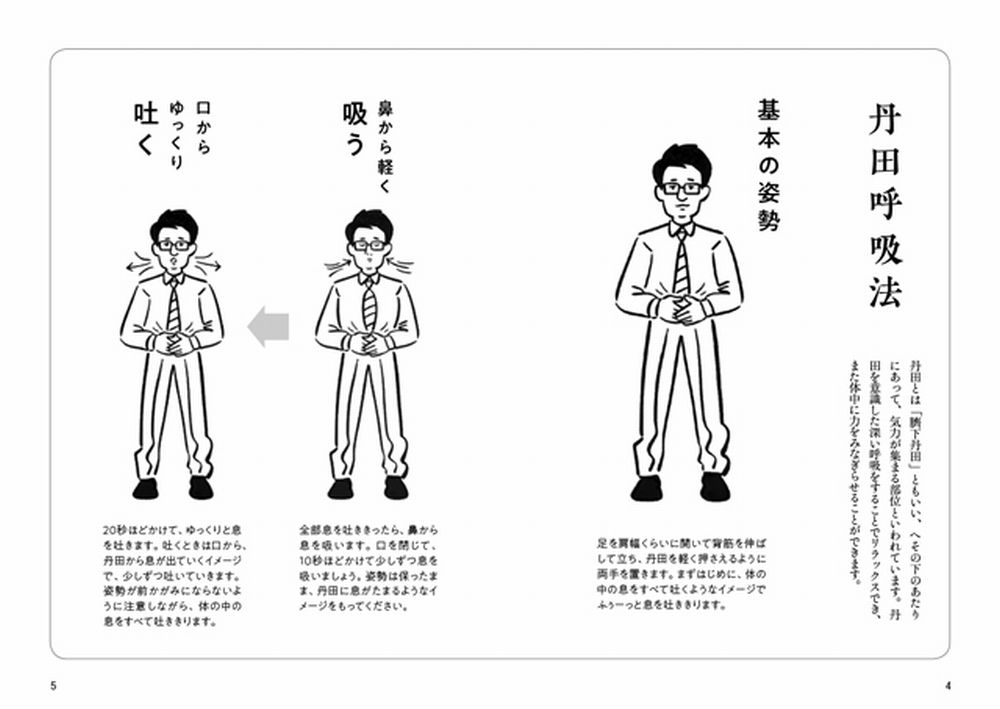
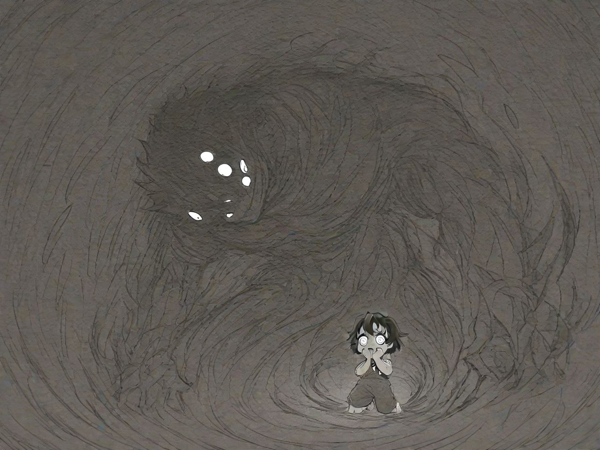
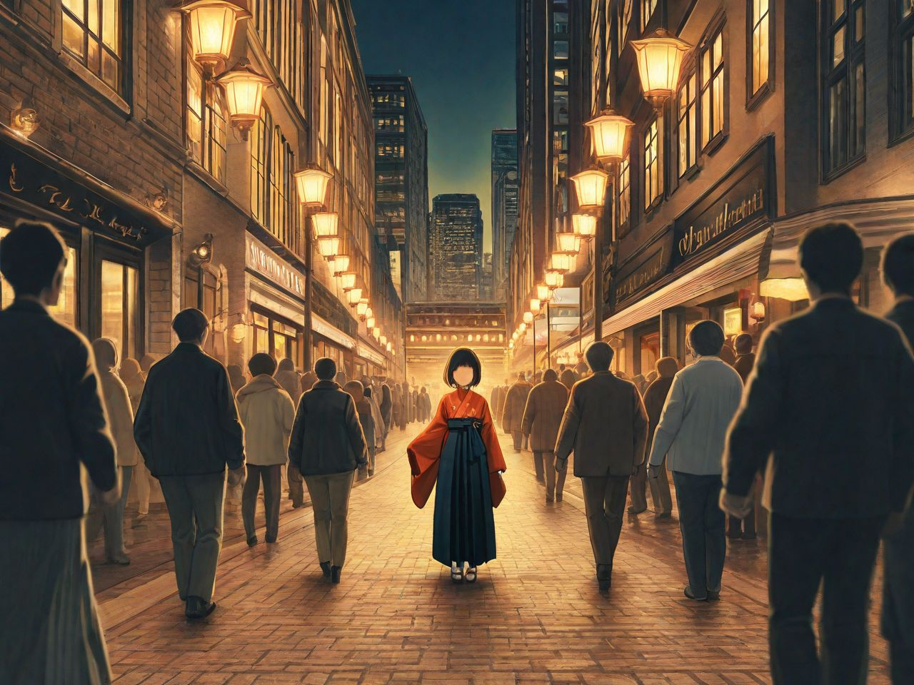

『鬼滅の刃』から見る大正時代の日本
『鬼滅の刃』は、世界中で大ヒットしたアニメであり、感動的なストーリーや個性的なキャラクターが注目されがちですが、その舞台背景である「大正時代」も見逃せない要素です。本記事では、『鬼滅の刃』を通じて学べる大正時代の歴史と文化を、服装・生活様式・思想などの観点から掘り下げていきます。
大正時代とはどんな時代？
大正時代（1912年〜1926年）は、明治時代の近代化を受け継ぎつつ、民主主義や自由主義の思想が広まり始めた過渡期です。西洋の技術や文化が一気に流入し、都市部ではモダンな建物やファッションが流行し始める一方、農村ではまだ伝統的な暮らしが根強く残っていました。
この時代はまた、教育の普及や交通インフラの発展（鉄道・電話など）も進み、庶民の生活様式も大きく変化しました。
 『鬼滅の刃』に見る大正時代の風俗と文化
1. 和洋折衷のファッション
登場人物の服装は、まさに大正時代の「和洋折衷」スタイルを象徴しています。炭治郎や善逸が着る着物、禰豆子の麻の葉文様の装い、そして鬼殺隊の制服は、伝統的な和装と西洋の軍服や学生服の要素が融合しています。
2. 鬼殺隊の組織構造と時代背景
鬼殺隊の階級制度や任務遂行のスタイルは、明治から大正期にかけての軍隊組織に近いものがあります。柱（上級隊士）を頂点とするヒエラルキーや、鍛錬を重視する精神は、当時の軍国主義的価値観ともリンクしています。
『鬼滅の刃 柱合会議・蝶屋敷編』キービジュアル (C)吾峠呼世晴／集英社・アニプレックス・ufotable
医療・科学・迷信の交錯
『鬼滅の刃』では、藤の花による毒、鬼の再生能力、そして全集中の呼吸といった超自然的な要素が頻繁に登場します。これらは、大正時代の「近代西洋医学」と「東洋の伝統医療（漢方・呼吸法など）」の混在を象徴しています。
出典：{Link:長息長生き丹田呼吸法で読む名作 丹田呼吸法で音読すれば、頭も体もすっきり https://www.iwasakishoten.co.jp/news/n30323.html}/ 齋藤 孝 著 より
鬼という存在のメタファー
鬼は単なるモンスターではなく、しばしば「時代の暗部」や「社会に適応できなかった者」の象徴として描かれます。鬼舞辻無惨や上弦の鬼たちは、それぞれが人間として生きていた過去を持ち、差別、貧困、病気などに苦しんだ末に鬼へと堕ちていきます。
技術と文明の描写
『鬼滅の刃』では、無限列車や都市部の風景に代表されるように、鉄道や照明、街並みなど大正時代の技術革新も丁寧に描かれています。
まとめ：『鬼滅の刃』は「時代の教科書」
『鬼滅の刃』はファンタジー作品でありながら、大正時代という日本の近代化の転換期をリアルに描き出した貴重なコンテンツです。服装、組織、技術、思想、価値観──あらゆる要素に時代の香りが漂っています。
アニメを通して歴史を学ぶことで、単なる知識以上に「生きた時代」を体感することができるのです。『鬼滅の刃』は、まさに現代人にとっての「ビジュアル教材」と言えるでしょう。